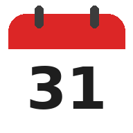

| Date | Day | Holiday |
|---|
Fixed-date holidays only (same date every year).

A basic calendar: month and year views, jump to any date and count the days between two dates. Marks fixed-date Indian holidays (New Year, Republic Day, Ambedkar Jayanti, May Day, Independence Day, Gandhi Jayanti, Christmas). Swipe the grid to change month, swipe the top bar to change screens.